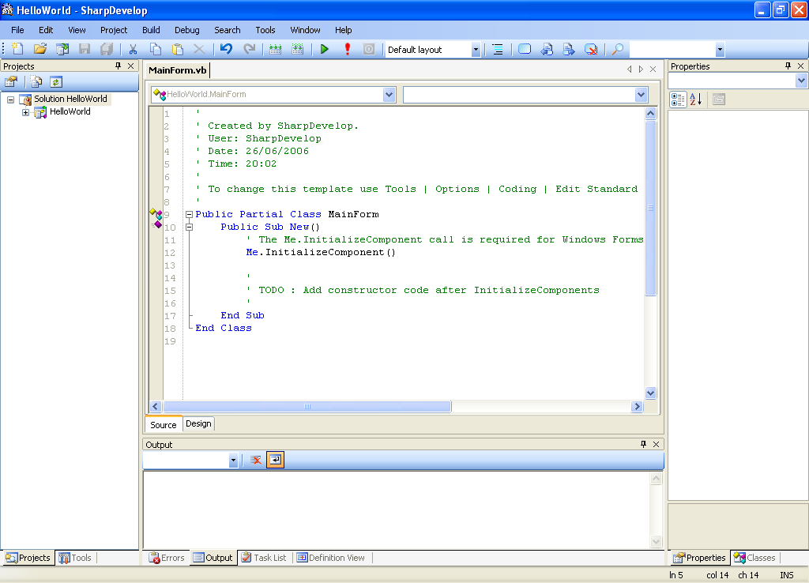
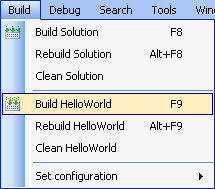
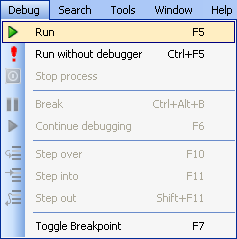

To introduce you to some of SharpDevelop's features, we
will create a simple "Hello, World "Windows application.
This example will be written using the VB.NET language.
Creating a New VB.NET Application
-
From the
File
menu, select
New
and then
Solution...
or use the shortcut Ctrl+Shift+N or click
New solution
on the Start Page.

This opens the New Project dialog box. This dialog box shows
all the various projects that SharpDevelop can create.
- From the New Project dialog, expand the VBNet category and
select the Windows Application category.
- From the list of available templates, select Windows
Application.
- Type in a name for the new project (e.g. HelloWorld).
- Enter the folder location for the new project. Type in the
full path or click the browse button
 to open the Browse for
Folder dialog box and choose a folder. The default location
should be fine, but you are free to choose another location for
the project. In the screenshot above, the project has been given
the name HelloWorld and the location has been set to
"C:\Projects". At the bottom of the dialog you can see
that the new project will be created in the folder
"C:\Projects\HelloWorld".
to open the Browse for
Folder dialog box and choose a folder. The default location
should be fine, but you are free to choose another location for
the project. In the screenshot above, the project has been given
the name HelloWorld and the location has been set to
"C:\Projects". At the bottom of the dialog you can see
that the new project will be created in the folder
"C:\Projects\HelloWorld".
-
Click the
Create
button. SharpDevelop will create the project and open it. On
the left hand side you can see the project in the Project
Explorer. Expand HelloWorld to see all the files that project
contains. In the middle the project's main form
MainForm.vb is opened.

Editing the Code
-
Now you will modify the MainForm class so the title of the
window of your HelloWorld application is set to "Hello,
World!". Delete the three
TODO
comment lines and type in the following single line of code:
Me.Text = "Hello, World!"
Your MainForm should now look like this.
Building the Application
-
From the
Build
menu, select
Build HelloWorld
.

-
As the project builds messages will appear in the
Output
window. If the build was successful you should see the
messages as shown below.
Running the Application
-
From the
Debug
menu, select
Run
or use the F5 keyboard shortcut.

This will run your application and its main form will be
displayed.
Congratulations, you have written your first VB.NET
application.